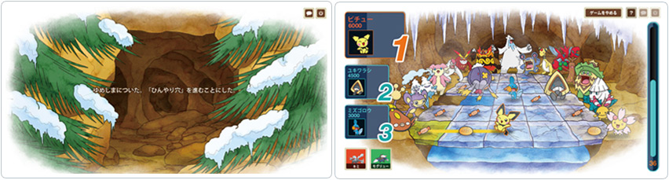
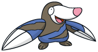
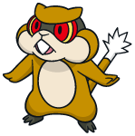
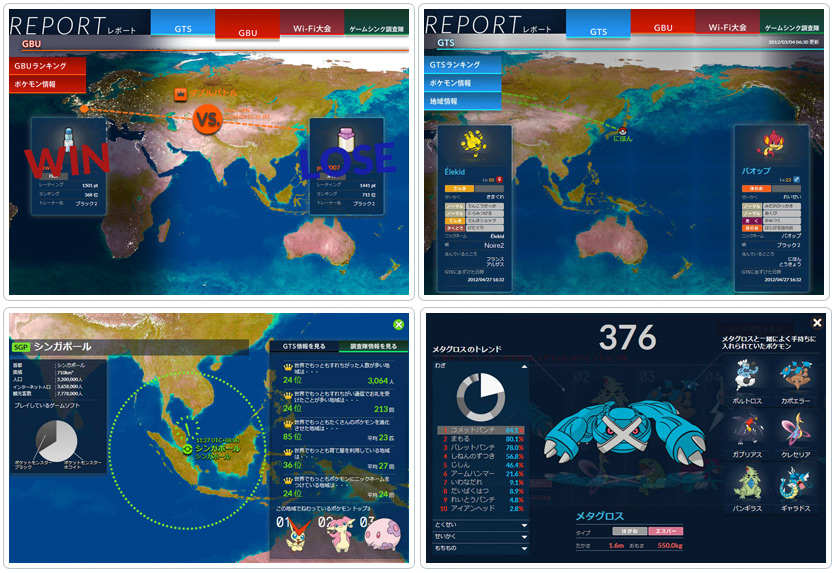

「ポケモングローバルリンク」がリニューアルしました！
ポケモングローバルリンクが『ポケットモンスターブラック２・ホワイト２』の発売にあわせてリニューアルしました！ ゲームソフトとの連動がさらにたのしくなったポケモングローバルリンクをお楽しみください！！
ポケモンドリームワールドに新要素追加！
ゆめしま新エリア『ひんやり穴』6/23(土)にオープン
こおりタイプのポケモンたちとたくさん会うことができるエリア「ひんやり穴」がオープン。このエリアでは新しいミニゲーム「ひやひやスイーツキャッチ」が登場！ ポケモンが氷の下に落ちないようにしながらたくさんのスイーツを集めよう！！

『ポケットモンスターブラック２・ホワイト２』で遊ぶとココが変わる！
ゆめしまで出会うことがなかったイッシュ地方のポケモンたちと出会えるように！
ゲームソフトでは手に入らない「かくれとくせい」を持っているポケモンもいるぞ！！
※同じエリアでも『ポケモンブラック・ホワイト』や体験版と、『ポケモンブラック２・ホワイト２』では出会えるポケモンが一部異なります。
他のエリアでも今までなかったミニゲームが！
『ブラック・ホワイト・体験版』では「とくべつなホーム」でしか遊べなかったミニゲーム「ドリンクはこび」「リザードンとたからばこ」がゆめしまエリアで遊べるようになったぞ！
行けるゆめしまエリアの順番が違う！
ゆめポイントと持っているバッジの数に応じて行けるようになるゆめしまエリアの順番は変わるけど、『ポケモンブラック・ホワイト』と『ポケモンブラック２・ホワイト２』ではその順番が違うのだ！


ねむらせているポケモンのタイプによって行きやすいエリアが変わる！
例えば、こおりタイプのポケモンであれば「ひんやり穴」に行きやすく、みずタイプのポケモンであれば「かがやく海」に行きやすくなっているぞ！いろんなタイプのポケモンをねむらせてチェックしてみよう！！
次回アクセス受付時間が20時間に短縮！
24時間待たなくてはいけなかったのが２０時間後にアクセスできるようになったよ。
ゆめしま新エリア『ひんやり穴』6/23(土)にオープン
自分のホームに「リゾートな家」と「森のかくれ家」が登場！きのみを育てて好みの家を購入しよう！！また、毎月「ポケモンドール」が登場。好きなポケモンのドールを自分のホームに飾って楽しんじゃおう！

『ポケットモンスターブラック２・ホワイト２』で遊ぶとココが変わる！
自分のホームにある「あしあとマット」にあしあとをつけていったプレイヤーが 『ポケットモンスターブラック２・ホワイト２』の新施設「ジョインアベニュー」に現れるぞ！
＊ジョインアベニューに現れるプレイヤーはPDWで「ポケモンを起こす準備をして終了」か、トップページで「ポケモンを起こす」の操作をすると現れるようになります。
｢きのみ｣に関する重要なお知らせ
ポケモンドリームワールドのゆめしまで手に入れたり、はたけで育て増やすことのできる｢きのみ｣は、ポケモンドリームワールドを100日以上プレイせずにいると、たからばこに所有する各「きのみ」がそれぞれ1個を残し、すべて｢ゆめの木｣に集められて｢ゆめポイント｣に還元されます。ご注意ください。
※週に一回の集計時点で100日以上ログインをしていないゲームソフトのデータが対象となります。※はたけで育てている「きのみ」、おすそわけ棚に置いてある「きのみ」は対象となりません。
プロフィールの公開範囲について
リニューアルオープン前に設定していた状態を問わず、プロフィールの公開範囲を｢非公開｣にもどしています。ポケモンドリームワールドで「どこかの○○さん」を見つける際に今遊んでいる方を見つけやすくするための対応となります。プロフィールの公開範囲の設定は｢マイページ｣→｢プロフィール公開範囲の変更｣からおこなえます。
世界中のプレイヤーのゲームプレイ動向がわかる「レポート」ページがオープン！
これまでのグローバルバトルユニオン（GBU）に加えて、世界中のプレイヤー同士がWi-Fi通信でポケモン交換をおこなうGTSのレポートも登場！ 欲しいポケモンと交換が成立しやすいポケモンなど、キミのポケモン集めの参考になる情報だ。
GBU・Wi-Fi大会で使われている人気ポケモンがわかるようになったぞ！ さらにWi-Fi大会では上位のユーザーが登録していたポケモンと覚えているわざやとくせいの情報などがあってバトルで強くなるヒントが満載だ。
